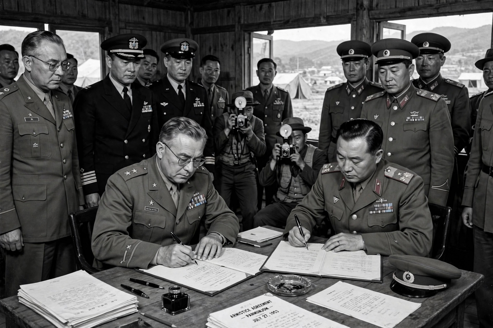

Korean Armistice Agreement
| Korean Armistice Agreement | |
|---|---|
| Signed | 27 July 1953, Panmunjom |
| Signatories | United Nations Command; Korean People's Army; Chinese People's Volunteers |
| Effect | Ceasefire ending hostilities of the Korean War |
The Korean Armistice Agreement is an armistice that brought about a complete cessation of hostilities of the Korean War. It was signed on 27 July 1953 at Panmunjom by representatives of the United Nations Command, the Korean People's Army, and the Chinese People's Volunteers. South Korea declined to sign.

Terms
The agreement established the Military Demarcation Line close to the 38th parallel, with a 4-kilometre-wide Demilitarized Zone (DMZ) as a buffer between North and South Korea. It provided for a ceasefire in place, the exchange of prisoners of war, the withdrawal of forces from the DMZ, and a Military Armistice Commission to supervise the truce. It recommended that the governments concerned hold a political conference to settle the Korean question peacefully.
Aftermath
No peace treaty has ever replaced the armistice, so the Korean War has never formally ended. The political conference held at Geneva in 1954 failed to produce a settlement. The DMZ remains one of the most heavily fortified borders in the world, although the Joint Security Area at Panmunjom has hosted historic meetings, including between North Korean, South Korean, and US leaders in 2018–2019. North Korea has repeatedly announced that it no longer considers itself bound by the armistice, but the agreement continues to govern the ceasefire in practice.
See also
Categories: Korean War | Armistices | 1953 in Korea